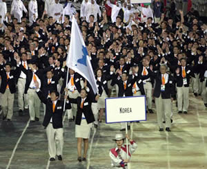

The Korean War: A Still Present Past
I. History - War Comes to Korea
The Korean peninsula has been home to a people with a common language, culture and history for over two millennia. It was ruled by a series of dynasties until 1910, when Japan annexed Korea as its colony. For the next 35 years, Koreans suffered political suppression, economic exploitation, and forced cultural assimilation. Japan forbade Koreans from speaking Korean requiring them to learn the Japanese language, forced them to abandon their religions and practice Shintoism (worship of the Japanese Emperor), and even required them to adopt Japanese names. Koreans were also kidnapped and sent to Japan and its other Asian colonies, to be used as forced labor and sex slaves - "comfort women." This oppression created an international diaspora of Koreans comprised of migrants to China, Russia, Japan, and even Mexico and the United States, fleeing poverty and repression.
Independence activists established a Provisional Government in Shanghai, and Koreans around the world participated in the movement for Korean independence. In 1945, they began forming People's Committees throughout Korea to prepare the country for liberation and self-rule. Liberation came in August that same year when Japan was defeated in World War II. By September, Koreans had formed the Korean People's Republic. But Korea was immediately divided into north and south by the United States and the Soviet Union. The United States accused the new Republic of being communist and refused to recognize the regional People's Committees. The United States declared itself an "occupying force" and established a full military government.
In keen competition with the Soviet Union and largely ignorant of Korea, the United States Military Government in Korea (USAMGIK) created a governance structure that included collaborators from the Japanese colonial regime, refused to work even with conservative nationalists, and began to promote pro-American and anti-communist activists, most prominently Rhee Syngman. In the north, the Soviet Union supported the new Republic; those viewed as rightists or collaborators with Japan were purged; and independence fighter Kim Il Sung, a communist, became the leader.
Thus, even before separate governments were formed in 1948, the artificial north/south division was reinforced by ideological splits fostered by the U.S. and the Soviet Union. Indeed, as soon as the 38th Parallel was established as the demarcation between North and South, it became a focal point for border skirmishes between leftists based in the north and rightists based in the south.
In 1948 the United States pushed through a separate presidential election in the south under the formal auspices of the United Nations. It acted in spite of protests from the north and nationalists in the south who believed that unilateral elections would formalize national division. Protests were labeled pro-communist, and some of the most violent suppression took place on Cheju Island in 1948 in what is now called the April 3 massacre. Nevertheless, elections were held, Rhee Syngman became president, and the Republic of Korea was founded on August 15th. On September 9th, the north responded by forming the Democratic People's Republic of Korea, installing Kim Il Sung as leader. With continuous border skirmishes between two ideologically opposed states backed by hostile world powers locked in the Cold War, the stage was set for the Korean War.
Explanations for the outbreak of the Korean War are highly contentious. For South Korea and the United States, it began with a surprise attack on June 25, 1950 when "North Korea, starting with a barrage of artillery, in the early morning hours invaded South Korea with some 90,000 to 100,000 troops," as reiterated by the U.S. Defense Department prior to commemorative activities for the 50th anniversary of the war's outbreak. But North Korea and China contend that the "surprise attack" was in response to incursions northward by the south. Until a true peace is established, scholars may never know the exact reasons why full-blown fighting began on that day, but Koreans who lived along the 38th Parallel remember that border clashes were common as early as 1948. Recalled Suntae J. Chun, whose hometown was Kaesong:
"Kaesong was right below the 38th Parallel before the war. A little bit north, it's North Korean territory and the North Korean army's base. Come out a little and it's the South Korean army base. And they shoot at each other with machine guns pretty regularly and then there were big skirmishes or big battles, especially in '48 and '49 right before the war; almost every few days, machine guns and mortars. We saw this many times. There's lots of wars. I saw some prisoners before the war and lots of people died, lots of soldiers died" (Listen to excerpt).
The Korean War was an air war, a guerrilla war, and almost became a nuclear war. The United States used bombing raids to devastating advantage, wiping out entire villages, towns and cities, mostly in the north, but also in the south. More tons of bombs were dropped on Korea during the war than on all of Europe during WWII. More napalm was used in Korea than during the Vietnam War.(1) On the ground, both North Koreans and South Koreans routinely rounded up and killed civilians they suspected of supporting the other side. The result was a carnage so great that European reporters wrote of walking through cities where every building was reduced to rubble and inhabitants who had not fled in time simply became casualties ("Refugee Trek").

Within weeks of the start of the war, the U.S. military seriously contemplated the use of nuclear weapons. In 1951, the U.S. went so far as to simulate nuclear bombing runs by dropping very heavy TNT bombs, instead of actual A-bombs, on North Korea. Chemical weapons were also considered but then apparently scrapped in view of the effectiveness of napalm. North Korea contends that the Allies engaged in biological warfare. After three years of war, fatalities totaled an estimated 500,000 North Korean combatants, 2 million North Korean civilians, 175,000 South Korean combatants, 1 million South Korean civilians, 1 million Chinese volunteers, 36,940 U.S. troops, and 3,000 other United Nations forces ("Collateral Damage").
The war had profound social consequences for Koreans. First, in addition to tremendous civilian casualties, the war created a huge population upheaval of displaced people, orphans, and separated families. The ebb and flow of the war resulted in a parallel ebb and flow of refugees. On foot, by ship, and by train, they fled south; they fled north. Trains were so crammed that people sat on the roofs, falling to their deaths if they dozed or were not tied fast. U.S. refugee ships turned away thousands for lack of room ("Climbing on Trains"). Refugees from the North were often wealthy landholders, those fearing religious or political persecution, and thousands fleeing in the face of massive U.S. bombing.
Said Mr. Kim Won Yop: "Many people came to South Korea from North Korea. I am sure they had different political thoughts and ideas. But people came to South Korea for religion because in North Korea they could not keep their own religion. People had such a strong motivation to live and I am sure that if they had not had that type of motivation, they would not have been able to survive. They were also encouraged by their religion."
Only three months into the war, 57,000 South Koreans were listed as missing and more than a half million homes had been either destroyed or damaged. Children were among the hardest hit. In 1954, an international child welfare agency estimated that two million children under the age of 18 had been displaced from their homes. At war's end, hundreds of thousands of Koreans -including children -found themselves on opposite sides of the 38th Parallel from relatives and families. They became the "separated families" who until the 1980s had no hope of seeing each other and even today - after more than 50 years - have only the slimmest likelihood of reunion. The situation is so common that nearly every Korean family is touched in some way by separation ("Family Reunion").
Second, the war transformed ideological divisions into deep hatreds as each side committed wartime atrocities against the other and against civilians ("My Mother Used to Tell Me"). It became impossible to maintain a neutral or conciliatory position. In the decades after the war, both the north and south engaged in ideological education of their citizenry, deepening anti-communism in the south and anti-capitalism in the north. South Korean schoolchildren in the 1960s and 1970s, for example, sang songs about running down and killing Kim Il Sung, while North Koreans were taught that South Koreans lived in poverty as degraded subjects of the United States. It's no wonder that defectors from the north have been shocked by the bustling modernity of South Korea, and that many South Koreans, including some who have become Korean Americans, harbor deeply rooted anti-communist feelings (Hosu Kim, "6.25; History Beneath the Skin"). Said Ted Youn:
"People were afraid of what was going to happen to them. You have a certain family name and the communists are going to come down and take them away and use them as labor or whatever they wanted. And they did. A lot of my relatives were taken away, especially Western-educated people."
Third, the Korean War deepened the special military relationship between South Korea and the United States, and this relationship wrought its own set of social and economic consequences. Primary among them was military and economic dependency on the United States. A tangible consequence of this subordination was the creation of a system of militarized prostitution in so-called camptowns next to each military base. This system, fully developed in the 1960s and 1970s at the behest of the U.S. military and with the cooperation of the South Korean government, continues to this day. Although prostitution is illegal in South Korea, it is legal in the camptowns, which are classified as "special entertainment districts." Hostesses work as prostitutes in clubs that cater only to American soldiers. In the 1970s the government praised the women as patriots for earning foreign exchange and strengthening national security by ensuring strong morale among U.S. troops in South Korea (Grace Cho, "6.25; History Beneath the Skin"). These ills have only recently come under scrutiny.
Less tangible but more pervasive is the spread of American culture through civilian contact with American soldiers, goods, television programs and other cultural media. The U.S. Information Service, for example, had nine centers in Korea, bringing American books, magazines, newspapers and films to the Korean people through libraries and mobile units. Koreans with access to U.S. soldiers, missionaries, and other Americans browsed the Sears Roebuck catalogue, dreamt of "America, the land of plenty," and, on occasion, even ordered goods. According to leading Korea scholar Bruce Cumings, the USIS strove to Americanize the Korean people and was so successful that America became the dreamland to millions of Koreans. South Korea caught what Koreans themselves call "American fever," the desire to go to America. More than 800,000 Koreans, not counting adoptees, have migrated to the United States ("Practical Hints for Your Foreign Child").
The Korean War is not over. The fighting ended with an armistice signed on July 27, 1953, by North Korea, the United States, and China. Both sides claimed victory. North Korea and its Chinese ally trumpeted their repulsion of the "imperialist Americans," while the United States heralded "containment" of the "communist aggressors." The armistice left Korea divided and created the world's most heavily militarized and dangerous border, the DMZ (Demilitarized Zone), at the 38th Parallel. More than a half-century later and still without a peace treaty, U.S. and South Korean troops remain locked in a standoff with North Korean troops across this border.

The day the armistice was signed was bereft of celebration, and few Koreans have clear memories of it. South Korea was not a signatory to the armistice having ceded power over military affairs to General Douglas MacArthur, commander of all United Nations Forces. Still, President Rhee Syngman strongly opposed the armistice and boycotted it. School children were among those he mobilized to protest. Recalls Kee Park:
"They had an agreement in July. It was a very hot day. All the students at our school went to, I think it was the U.S. embassy. We just sat down there and we had to cry. I don't know why we did it. I think President Syngman Rhee asked, ordered our school, probably to protest the communists. President Rhee didn't want to accept our country being divided into two. We wanted to win back our country. We wanted unification."
In the south, a series of U.S.-backed military dictators ruled Korea for the next four decades as the nation embarked on a program of economic development that by the 1980s would startle the world with its success. Longtime political dissident, Kim Dae-Jung, elected in 1997, was the first South Korean president untainted by any direct alliance with former military generals. Successor Roh Moo-Hyun, elected in 2002, is a former human rights lawyer and Kim Dae-Jung ally. For many South Koreans, Kim's election marked the beginning of South Korea's maturity as a democracy.
In the north, Kim Il Sung presided over a communist country like no other, one that blended socialism with a hero-worship of its leader. North Korea's official ruling ideology, Juche, emphasizes self-reliance as the foundation for an independent North Korea in the face of threats from the U.S. and its allies, and even Soviet and Chinese influences. After Jimmy Carter was elected as U.S. president, North Korea proposed three-way talks with the U.S. and South Korea to begin the process of reconciliation and reunification on the Korean peninsula, but to no avail. After more than two decades of steady economic growth, North Korea began to falter as a result of the loss of its socialist trading partners, unprecedented famine and drought, and prolonged economic isolation. By the mid-1990s, its economy was in shambles and its people starving. After Kim Il-Sung's death in 1995, his son, Kim Jong-Il, became the North Korean leader in a dynastic succession heavily criticized by foreigners.
Under Kim Dae-Jung, South Korea began to implement a "sunshine policy" of engagement with North Korea that has been continued by the Roh Moo-Hyun government. On June 15, 2000, Kim Dae-Jung and Kim Jong-Il met in an unprecedented summit in Pyongyang and signed a Joint Declaration expressing confidence in the Korean people to achieve reconciliation, and committing to economic cooperation and civic exchanges.

Since then, economic and cultural ties between the two countries have increased rapidly. South Korea is now North Korea's largest trading partner, and has insisted on engaging with the north despite U.S. pressures to follow its hard line position toward North Korea.
The prospects for reunification, however, remain tenuous. Both Koreas must negotiate their own tortured relationship and navigate strained and difficult relations with allies and enemies, including regional heavyweights Japan, China and the United States. In this context, the 2000 Summit agreement remains the bedrock for continued north-south cooperation.
II. The War, Immigration, and Korean America
The Korean War almost immediately created two new classes of migrants: the military bride and the adoptee. Nearly 100,000 so-called "internationally married women" or "military brides" entered the United States between 1950 and 1989, and an estimated 1,000 military brides continue to emigrate to America annually. Approximately 150,000 Korean adoptees have entered the United States since 1953. At first they were either war babies fathered by U.S. soldiers or war orphans. Later they were children given up by desperate families or by single mothers. Despite some Korean government attempts to discourage international adoption, the latest figures from 2002 and 2003 show that more than 2,000 Korean children a year are sent abroad via adoption, primarily to the United States ("Practical Hints for Your Foreign Child").
Both groups came at a time when immigration from Asia was either prohibited outright or severely restricted. They were admitted as non-quota immigrants as wives and adoptive children of American citizens. With a few exceptions, they were the only Koreans allowed entry as permanent residents between 1924 and 1965, after which immigration laws were liberalized.
Military brides and adoptees entered American families and scattered throughout the United States, often in suburban or rural areas with few Asians. Military brides have formed their own networks of organizations and friendships, usually separate from other Korean immigrant communities and generally near military bases. For many women, their status as military brides creates particular hardships. According to Helen Kyungsook Daniels:
"Even though I married a Caucasian, I don't feel too comfortable (around them); they don't socialize with me too much. Sometimes I wish I had married a Korean, rather than an American man. Even now I don't mix with the Koreans, I don't mix with the Americans. It's half way. A lot of my friends who married Caucasians, they feel the exact same way. We feel kind of rejected from our family and also, you know, (from) our husband's family."
Korean adoptees have been placed primarily with white American families. Many are now adults, and have recently begun to speak out about their experiences and have become a visible presence. Adoptees have organized national and international associations, held conferences, and published poems, essays and short stories. Like military brides, many adoptees are eager to establish meaningful ties with mainstream Korean American communities and have begun to assert their membership in the wider international Korean diaspora. The number of Korean adoptees peaked in the 1970s and 1980s, and then began declining as the South Korean government made it more difficult to send children overseas in response to criticism. But adoptions from Korea have been rising again as a result of economic recession since 1997.
After immigration laws were liberalized in 1965, Koreans began migrating to the United States as doctors, nurses, and other professionals, and as relatives of military brides and other Koreans who were U.S. citizens. According to the 2000 U.S. Census, the total Korean American population stands at 1,076,872, or at 1,228,427 including those of mixed heritage. About 800,000 of that number are quota immigrants, and a high proportion of those immigrants entered as relatives of military brides. It's estimated that more than half of all Korean newcomers can trace their immigration to a military bride who sponsored a relative and became the linchpin in a chain migration. Immigration was also a consequence of wartime displacement. Until the early 1980s, as much as 70 percent of Korean immigrants traced their birthplace to North Korea. They had been refugees who fled south where they felt marginalized in a society that placed great emphasis on hometowns, and viewed outsiders, especially those from the North, with suspicion.
This post-1965 Korean immigration resulted in the development of large Korean immigrant communities in Los Angeles, New York, San Francisco, and Chicago, as well as smaller communities throughout the United States. These communities also harbor the same issues of separated families and Korean War trauma that have resulted in emotional public occasions in Korea. While South Koreans have had televised group meetings between separated family members from the North and the South, some Korean Americans have quietly visited their families in North Korea, but under fear of censure from fellow Korean Americans even though travel to North Korea is perfectly legal. The past is still present, but it goes unspoken and unnamed ("Legacies").
The Korean War, however, is publicly commemorated each year in ceremonies featuring Korean and American veterans renewing bonds of wartime comradeship. These annual ceremonies also function in part to affirm the Korean presence in America as well as the U.S. military presence in South Korea. For many ordinary Korean Americans, however, there is little time for politics, present or past, in the midst of trying to earn a living, raise a family, and navigate an unfamiliar and at times hostile society.
But the American Dream has proven elusive. Despite stereotypes of successful store-owning immigrants and professional, American-born children, most Korean immigrants have low-status jobs as factory workers, clerks, or janitors. Their families are often at the brink of poverty. The 2000 Census, for example, showed that 30 percent of Koreans in Chicago live under the poverty line. Most Korean professionals-doctors, lawyers, accountants, etc.-cater to low-income or immigrant clients, primarily within Korean American communities. The 1992 LA riots, a product of economic neglect of poor, urban areas, devastated Korean Americans, who saw their livelihoods literally turn to ashes and rubble. For many, it conjured ghosts of the Korean War ("Defining Moments," "Our Cosmos, Our Chaos").
Far from forgotten, the war has remained just below the surface, a silent, oppressive gloom sometimes passed on to an American-born generation ill-equipped to understand this legacy. This unspoken past often distorts family relations, deepening generational and cultural gaps between parents and children. Similarly, North Korea has been an "absent presence" marked as dangerous by the silence and terse comments of the immigrants. Some second-generation Korean Americans have absorbed the silence, often perplexed by their elders' behavior. In response, they have begun to tease out family histories from fragments: colonial childhoods, wartime evacuations, bombings, deaths, military service, leftist resistance, state suppression, camptowns, missing uncles, missing grandparents, family members left behind in the north. As Orson Moon said,
"My life seemed a lot like lots of other kids around me. But there always seemed to be this tension and anxiety, which was sort of blowing through my family like an unhappy wind. And there were silences... When I first heard these stories, a lot of things fell into place, and I felt as if a weight had been lifted from me" ("Silences").
For other, younger Korean Americans, Korean history and the Korean War are often far removed from everyday concerns. Still, hearing about surviving the war, if only by accidental exposure to an older person's story, can evoke a hunger to learn more. As one college student remarked after hearing some of the oral histories that inspired the Still Present Pasts exhibit:
"When I heard these stories, it left me almost shell-shocked, almost unable to feel, to understand. It causes me to see my family in a different light...At the same time, it makes me angry. Why didn't they talk about it, why didn't I ask? I recently learned my grandfather died during the Korean War. I wonder how painful it was for my [deceased] grandma. I wish I could turn back the clock and ask her all the questions I have. I wish I had asked before it was too late" ("Our Puzzle").
At a time when Korea itself is moving, however fitfully and tentatively, toward reconciliation, it seems appropriate that Korean Americans also embark on the difficult process of coming to terms with the past. The war and national division have left as deep a mark on Korean Americans of all generations as they have on Koreans living on the Korean peninsula. Here, the still present past awaits recognition and voice in order for Korean Americans to join with others to seek reconciliation and insist on peaceful resolution of outstanding political conflict. The future depends on what we do with the past ("Bridge of Return").
Footnotes:
1. See chapter one of Bruce Cumings' North Korea: Another Country (New York: New Press, 2003) for a detailed discussion of the damage sustained by Korea in the Korean War. The use of napalm is discussed on pages 16 and 17.
List of photographs (in order of appearance):
Image 1: Koreans Fleeing Pyongyang braving the icy waters of the Taedong River.
Photographed: December 10, 1950. 촬영: 1950년 12월 10일 Bettmann Collection/CORBIS
Image 2: General W. K. Harrison, Jr., signs armistice ending 3-year Korean conflict. Generall Harrison, left table, and North Korean General Nam Il, right table, sign documents.
Photographer: F. Kazukaitis, July 23, 1953
Image 3: Athletes from the north and south march together in the opening ceremony of the 2000 Sydney Olympics